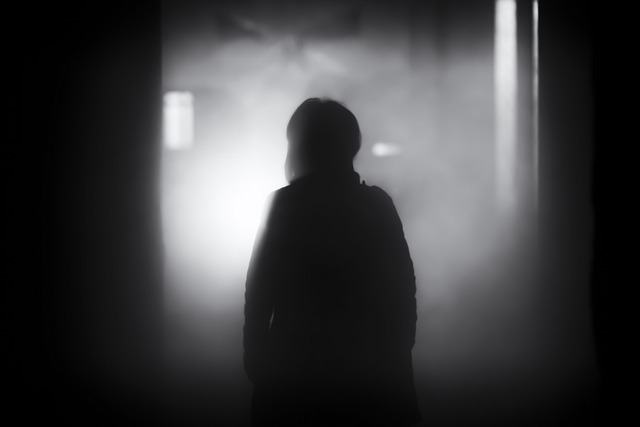

Dem Schatten hinterher laufen ?
Du läufst dem Schatten eine Zeit lang Hinterher . Doch du kannst ihn einfach nicht einholen, bis du auf einmal bemerkst das der Schatten stehen geblieben war.

Ruckartig bleibst du stehen. Du starrst die Personn an die du gerade verfolgt hast . Du gibs dir größte mühe das Gesicht zu erkennen . Doch leider kannst du nichts genaueres erkennen, nur die dunklen schwarzen Augen.

Du blickst in diese Augen und weichst zurück. Du erschrackst nicht aus Angst und auch nihct aus Eckel . Irgentwas störte dich an diesen Augen. Vieleicht war es die Tatsache das du den Rest des Körpers nicht sehen konntest.
Aber auch das war eher ein kleineres Problemm . Dich störte eher die ausstrahlung dieser Augen . Du kannst zwar nicht beschreiben wie genau , aber diese Augen hatten eine gewisse Aura die dich zurück schrecken ließ
Du blickst weiterhin in die 2 Meterhohen Augen kannst dich aber dennoch nicht zusammen reißen und auf sie zugehen .
Was wirst du tun ?
- Zurück zur Treppe
- Auf ihn zugehen